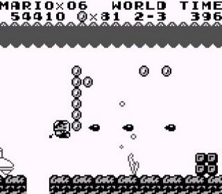

SUPER MARIO LAND
Super Mario Land es un videojuego de plataformas lanzado por Nintendo en 1989 en Japón y Estados Unidos y en 1990 en Europa para Game Boy. Vendió 18,14 millones de copias, haciéndole uno de los más vendido de la serie Mario. La historia nos narra como Daisy, princesa de Sarasaland es raptada por el malvado extraterrestre Tatanga.

A su rescate acude Mario. El modo de juego es muy similar al del original Super Mario Bros., ya que recupera varios conceptos como saltar sobre un enemigo para eliminarlo. El juego consta de 12 niveles distribuidos en cuatro mundos que son Birabuto, Muda, Easton y Ca Chai. La batalla final contra el extraterrestre Tatanga es muy recordada ya que es de las únicas batallas de disparos de Mario. Se llevó un 90 por Nintendojo y un 77 por EGM.